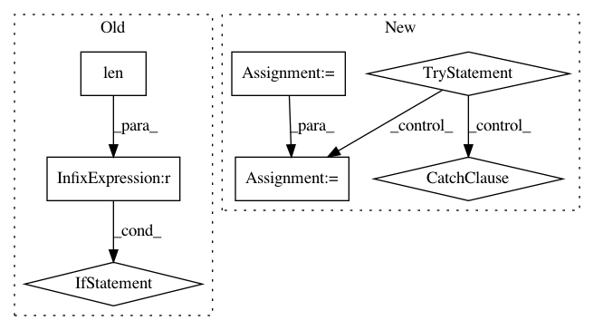

3b1755b2600a0a34a3be60df73cd1710ec8e20ce,nilmtk/metergroup.py,,combine_chunks_from_generators,#,1265
Before Change
timeframe = timeframe.intersect(chunk_from_next_meter.timeframe)
chunk = chunk.add(chunk_from_next_meter, fill_value=0, level="physical_quantity")
if len(chunk) != len(chunk_from_next_meter):
warn("Meters are not perfectly aligned.")
// Update columns_to_average_counter
physical_quantities = chunk_from_next_meter.columns.get_level_values("physical_quantity")
columns_to_average = (set(PHYSICAL_QUANTITIES_TO_AVERAGE)
.intersection(physical_quantities))
counter_increment = pd.DataFrame(1, columns=columns_to_average,
After Change
if timeframe is None:
timeframe = chunk_from_next_meter.timeframe
else:
timeframe = timeframe.union(chunk_from_next_meter.timeframe)
// Extend "index" if necessary
index = extend_index(index, timeframe, sample_period)
// Reindex chunk_from_next_meter
chunk_from_next_meter = chunk_from_next_meter.reindex(
index, method="ffill", limit=1, fill_value=0)
// Add
try:
chunk = chunk.add(chunk_from_next_meter, fill_value=0)
except ValueError as e:
if str(e) != "cannot join with no level specified and no overlapping names":
raise
chunk = chunk.add(chunk_from_next_meter, fill_value=0,
level="physical_quantity")
// Update columns_to_average_counter - this is necessary so we do not
// add up columns like "voltage" which should be averaged.
physical_quantities = chunk_from_next_meter.columns.get_level_values("physical_quantity")
columns_to_average = (set(PHYSICAL_QUANTITIES_TO_AVERAGE)
.intersection(physical_quantities))
counter_increment = pd.DataFrame(1, columns=columns_to_average,
In pattern: SUPERPATTERN
Frequency: 3
Non-data size: 7
Instances
Project Name: nilmtk/nilmtk
Commit Name: 3b1755b2600a0a34a3be60df73cd1710ec8e20ce
Time: 2014-12-11
Author: jack-list@xlk.org.uk
File Name: nilmtk/metergroup.py
Class Name:
Method Name: combine_chunks_from_generators
Project Name: lingpy/lingpy
Commit Name: 0b33f535fc0a643d612c7f1d758076f48dac0845
Time: 2012-11-06
Author: mattis.list@gmail.com
File Name: lingpy/algorithm/classes.py
Class Name: WordList
Method Name: getDict
Project Name: ilastik/ilastik
Commit Name: 219459f15476426276e24329cdb6f091b5f7cf41
Time: 2019-06-26
Author: tomaz.vieira@embl.de
File Name: ilastik/applets/dataSelection/dataSelectionGui.py
Class Name: DataSelectionGui
Method Name: _createDatasetInfo